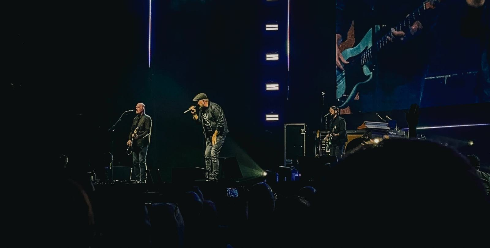
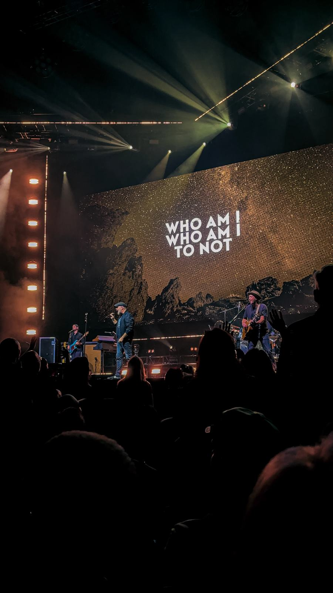
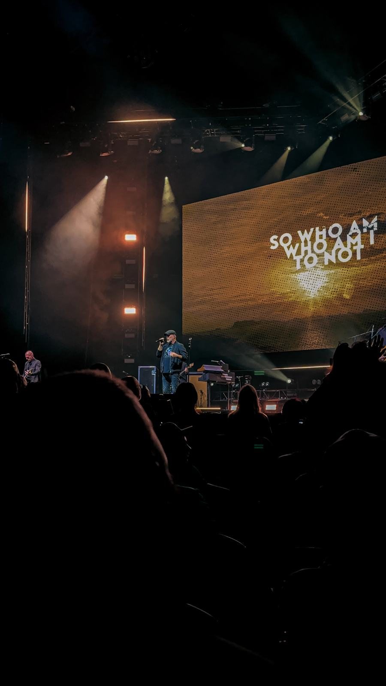
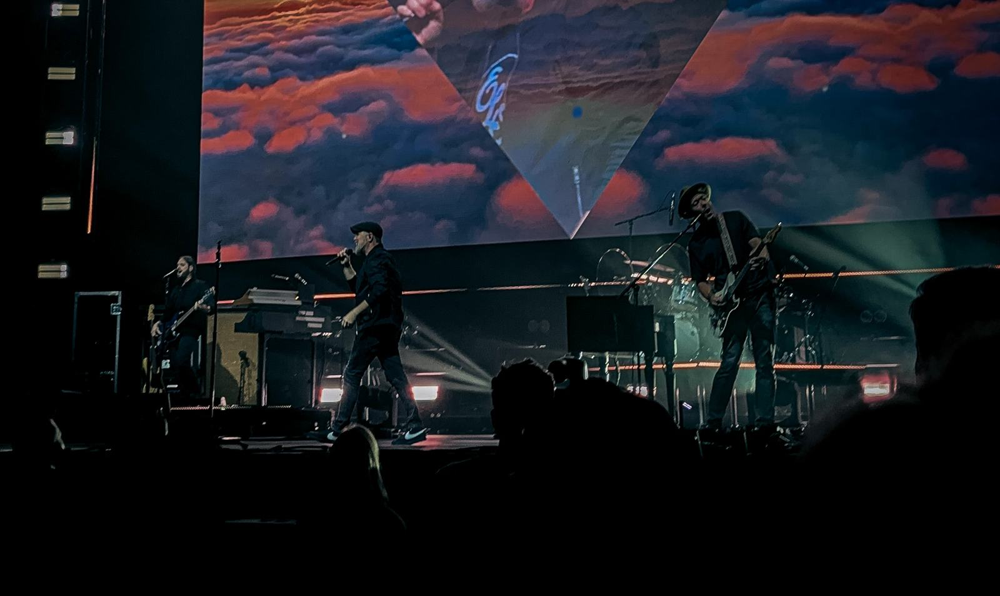
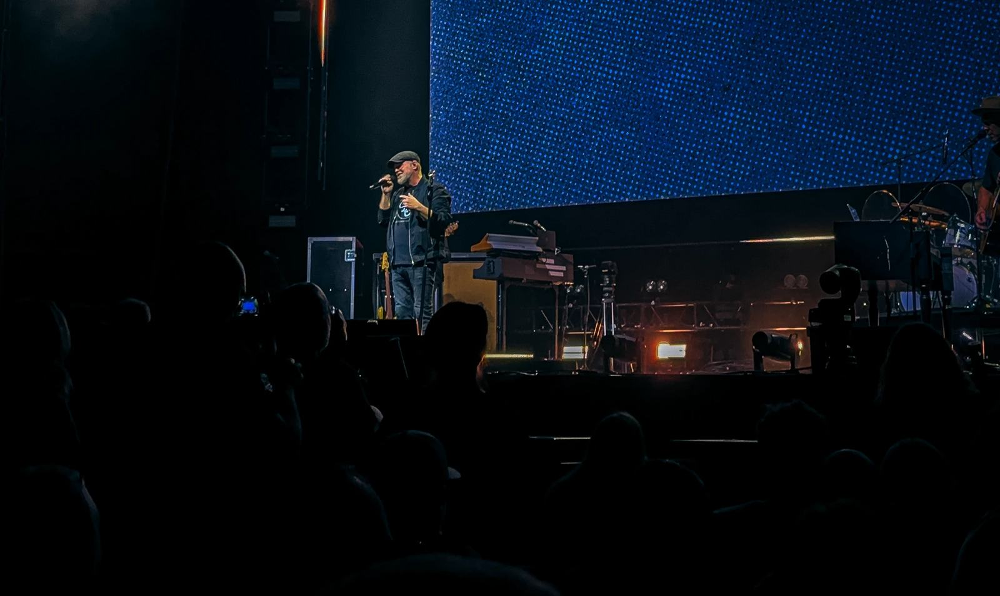
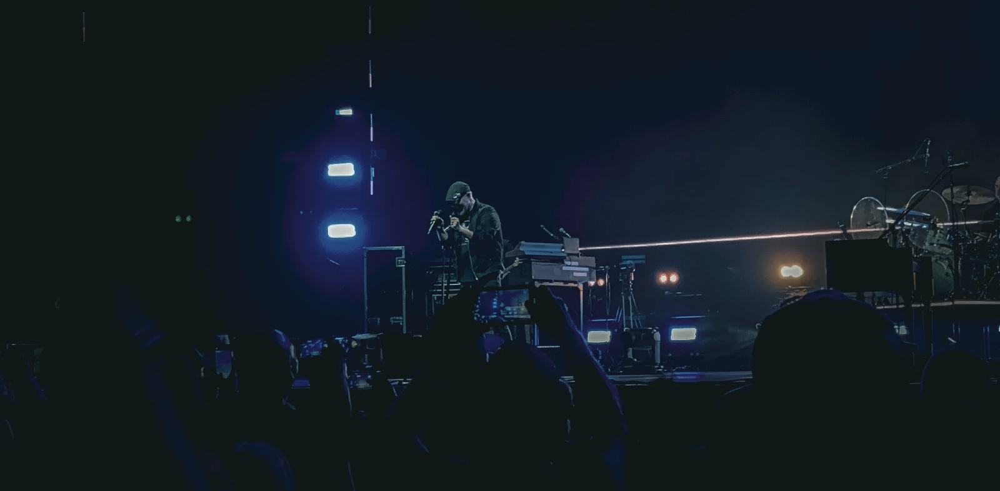
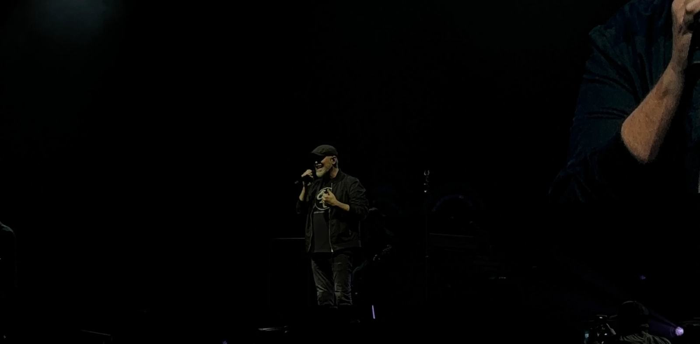

Work / Live photography / 03
MercyMe 2025
Concert photography of MercyMe on their 2025 tour.

From the acoustic set under warm light to the confetti finale: the whole night in a single series.
Edited in Lightroom for deep blacks while keeping the color of every lighting cue.
 1400 × 700
1400 × 700 1600 × 810
1600 × 810
1600 × 810 1156 × 1600
1156 × 1600 1156 × 1600
1156 × 1600 1156 × 1600
1156 × 1600 1600 × 1539
1600 × 1539 1600 × 1539
1600 × 1539 900 × 1600
900 × 1600
900 × 1600 900 × 1600
900 × 1600
900 × 1600 900 × 1600
900 × 1600
1600 × 954
1600 × 954
1600 × 786
1600 × 786 1600 × 7861200 × 1600
1600 × 7861200 × 1600 1200 × 1600
1200 × 1600 900 × 1600
900 × 1600